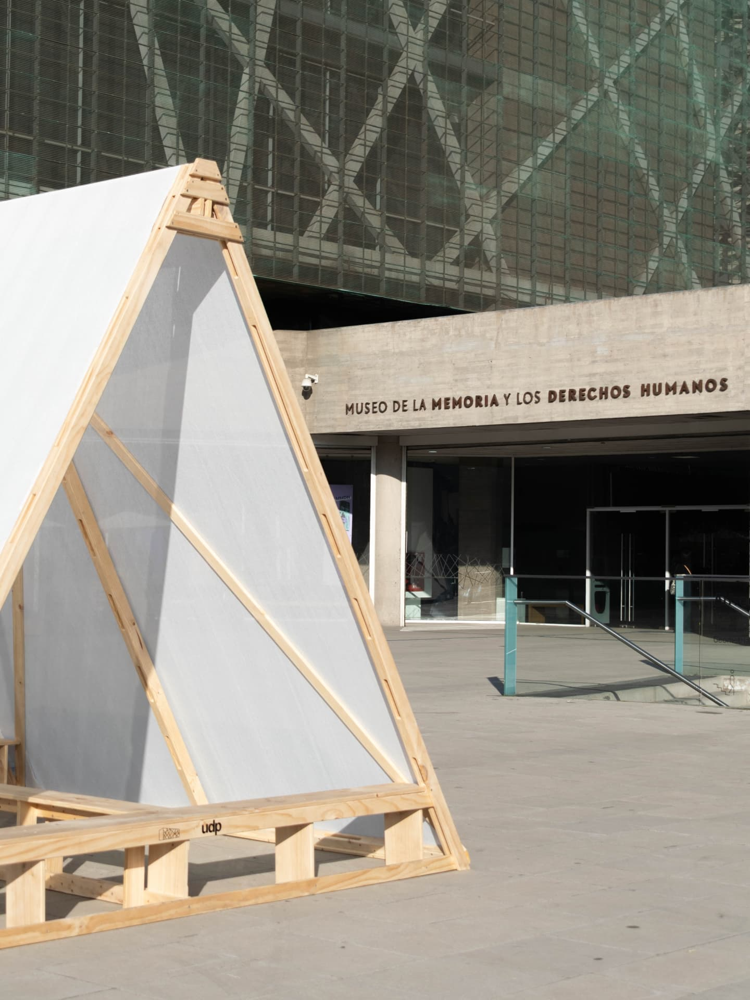

ENTRE
JUEGOS
Ubicado en la explanada del Museo de la Memoria, el proyecto aborda el derecho al juego y al tiempo libre. Se concibe como una intervención que promueve el descanso y la pausa dentro del recorrido lúdico.
A diferencia de las dinámicas tradicionales, el espacio elimina las reglas prefijadas. Entrega una estructura básica que actúa como soporte para que la imaginación de los usuarios sea el único motor del juego.
La propuesta invita a habitar el lugar libremente, ya sea para tomar un respiro, explorar de forma individual o generar interacciones creativas espontáneas según la necesidad de usuario.